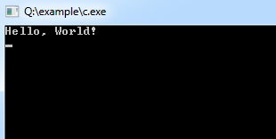

Let's begin with a simple C program code.
/*
Date: 2018-04-28
Description:
Writes the words "Hello, World!" on the screen */
#include<stdio.h>
int main()
{
printf("Hello, World!\n");
return 0;
}or in a different way
/*
Date: 2013-11-15
Description:
Writes the words "Hello, World!" on the screen */
#include
<stdio.h>
#include<conio.h>
void main()
{
printf("Hello, World!\n");
return;
}
The above example has been used to print Hello, World! Text on the screen.
| /* Comments */ | Comments are a way of explaining what makes a program. The compiler ignores comments and used by others to understand the code.
or This is a comment block, which is ignored by the compiler. Comment can be used anywhere in the program to add info about the program or code block, which will be helpful for developers to understand the existing code in the future easily. |
| #include<stdio.h> | stdio is standard for input/output, this allows us to use some commands which includes a file called stdio.h.
or This is a preprocessor command. That notifies the compiler to include the header file stdio.h in the program before compiling the source-code. |
| int/void main() | int/void is a return value, which will be explained in a while. |
| main() | The main() is the main function where program execution begins. Every C program must contain only one main function.
or This is the main function, which is the default entry point for every C program and the void in front of it indicates that it does not return a value. |
| Braces | Two curly brackets "{...}" are used to group all statements.
or Curly braces which shows how much the main() function has its scope. |
| printf() | It is a function in C, which prints text on the screen.
or This is another pre-defined function of C which is used to be displayed text string in the screen. |
| return 0 | At the end of the main function returns value 0. |
The example discussed above illustrates how a simple C program looks like and how the program segment works. A C program may contain one or more sections which are figured above.
The Documentation section usually contains the collection of comment lines giving the name of the program, author's or programmer's name and few other details. The second part is the link-section which instructs the compiler to connect to the various functions from the system library. The Definition section describes all the symbolic-constants. The global declaration section is used to define those variables that are used globally within the entire program and is used in more than one function. This section also declares all the user-defined functions. Then comes the main(). All C programs must have a main() which contains two parts:
The declaration part is used to declare all variables that will be used within the program. There needs to be at least one statement in the executable part, and these two parts are declared within the opening and closing curly braces of the main(). The execution of the program begins at the opening brace '{' and ends with the closing brace '}'. Also, it has to be noted that all the statements of these two parts need to be terminated with a semi-colon.
The sub-program section deals with all user-defined functions that are called from the main(). These user-defined functions are declared and usually defined after the main() function.
Here some Articles that you want to read